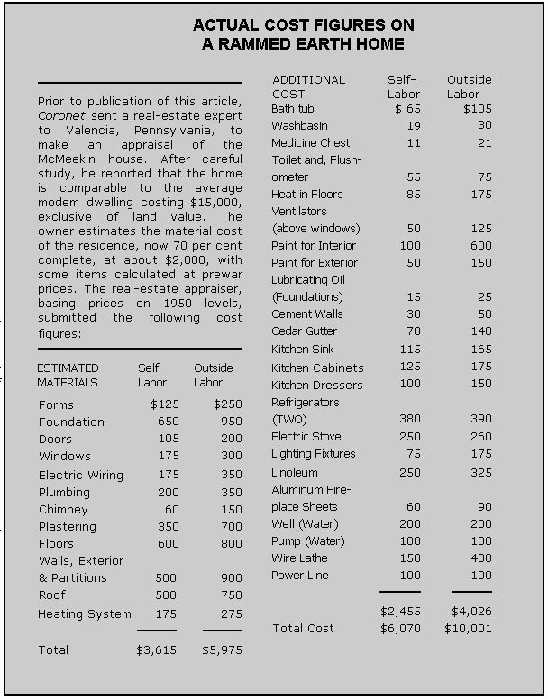

Even on a modest income, you can have a house of your own ... this article proves it.
This article, which appeared in the May 1950 Coronet, is copyright © by Esquire lnc. and is reprinted with permission.
Thirteen years ago, a Coronet article changed my life!
Thirteen years ago, my wife and I were hard-up, rent-paying tenants in a crowded city. Today we are independent and secure in the Pennsylvania countryside. We own, debt-free, a $15,000 home. And we did it all on a modest income.
How can I credit this independence and security to a Coronet article? It was called "Houses of Earth," and the author maintained that anybody could build his own house. All you did was erect wooden forms on a foundation, pound in four-inch layers of dirt, and you would have a rammed earth (or Pasde Terre) wall.
Phisé, it developed, was an ancient and honorable building method, almost forgotten today. As soon as one form was full of rammed earth, you moved it and rammed another section, and so on until the wall was complete. As simple as that. Easy, cheap and permanent, the article said.
And every word was true. Our home is warm in winter, cool in summer. The foot-thick walls are proof against vermin, termites and fire, and will stand for centuries. And they were easy and cheap to erect, just as the Coronet article stated. I know, because I have built our home-during my spare time!
There is nothing remarkable about me. I am just an average fellow: a salesman, 37 years old, weighing 163 pounds. I am five-feet-eleven, and have the usual number of hands and legs. It just happens that I used my spare time to build a home of rammed earth.
Our house does not appear unusual. Without knowing its history, you would drive by and notice only an attractive home with clean, simple lines. It is big, but it hugs the ground with an air of belonging. And it is filled with modern appliances that we were able to afford because we saved so much by using the construction methods we did.
And if we built a home that way, you can too. Here's how we happened to get started ....
Betty read the Coronet article first "Look," she exclaimed, "the author says that anyone can build a home of rammed earth."
"Not me, honey," I replied. "The only thing I ever built was a birdhouse, and the Scoutmaster said the comers weren't square."
But Betty was insistent, so we read the article again and then went to the library for more information. It still sounded simple. Centuries-old houses made of rammed earth were still standing, in good repair. The only objection, we found, was that the method took more time and labor than conventional techniques.
"But look, darling," I said, "suppose we do try it-you'll suffer hardships. Here in this apartment, at least we have a bathroom and running water."
"And if we stay here, that's all well ever have," she countered. "Building a place of our own will give us security and independence-and a place to raise a family.
Betty was right. Our budget proved it. After rent, food and clothing, there was little left. If our rent money could be used to buy some land, and my spare time to build on it, well ....
I jotted down a list of requirements for the land: [1] It had to be cheap; [2] it had to be within commuting distance of my job; [3] it would be fine if it included a cheap, run-down house, where we could live while building; [4] it had to have the right kind of dirt for building with rammed earth.
Fruitlessly we scanned newspaper ads; vainly we haunted real estate brokers. Finally we got a break on one of our Sunday afternoon drives into the country. Rounding a bend, we saw, half-hidden in briars, a weatherbeaten sign: FOR SALE.
A hundred feet from the road stood a decrepit shack. The walls leaned; newspapers were stuck around the windows. We made our way to the door.
"Nice place here. We see you've got it up for sale."
"Yup. Built it myself," the old man replied. "Needs a little patching, though."
"Is the ground good for farming?" I asked.
"Raises fine blackberries, but it's too sandy for corn."
My spine tingled. Seventy-five per cent sand was ideal for rammed-earth construction! Exactly what we wanted: five acres, a run-down house, electricity and water available, and within driving distance of my job. Anxiously we asked the price. Wonderful! We could afford it!
Next day we drove out and made a down payment of $100 on our home. Then we arranged mortgage payments the same as our rent, and two months later were ready to move.
Moving day was a bright June morning. I unloaded the truck as Betty busied herself with cleaning. When night came, we assembled our bed in what we laughingly called the bedroom. We fell asleep under our own roof-leaky, maybe, but our very own! ...
For the next few weeks, we were busy making our little place bright, cheerful and weather-tight. Finally we knew it would weather the winter. Now we could start building!
Already on graph paper were scale drawings of our new home. Simple in design, it would be a low, one-story structure with a center section and two wings, in the form of the letter "U". We would build the center section and one wing first, move into it, then tear down the old house and construct the other wing where it stood. Our back wall called for a picture window and French doors facing the view, and since they were both large openings we started there.
First came the foundation, a 36-inch reinforced concrete footing. Narrow in the middle, it tapered out to 12 inches at the top, the width of our walls. It extends below ground two feet, the frost level in our area.
Excellent plans for building foundation forms are contained in a free bulletin, No. 277, Rammed Earth Walls for Farm Buildings , published by the South Dakota State College at Brookings. Not having enough money to buy new wood and cement too, I used scrap boards from our corncrib and lined the forms with waterproof building paper. I found the only precaution necessary was to be sure the top of the form was level and that the boards couldn't warp or bulge under pressure from wet concrete.
After I had filled the first section of wall with rammed earth, I took off the form and it stood there, a beautiful monolithic block of sandstone eight feet long and seven feet high, constructed by pressure as it is in nature.
"Why, anybody can do that!" commented a friend as he watched me build a section.
He was right. My forms are made from 5/8-inch plywood shoots, lined with galvanized iron and reinforced at the edges with angle iron. They are attached on the wall with bolts threaded on both ends. After the forms are tightened and made plumb, they are rammed full of earth, each four-inch layer pounded solid before the next is added. Then the bolts are removed and the form is ready for the next section. By using two-by-twelve planks for window and door frames, it is simple to leave openings in the wall.
I built the forms following directions in that South Dakota bulletin. The materials cost about $50.00, and the forms are still good as new.
When people first discover you are building of rammed earth, they are incredulous. What holds it down? What makes it stick together? If it's so good, why doesn't everyone build of rammed earth?
The last question is a good one. The answer is: in this age, the cost of labor would make rammed-earth construction fantastically expensive. But for the fellow who will work for himself, it is ideal. All you need is spare time.
I used two tampers. The first, about eight inches square on the bottom, firms the ground. The other, which a machinist friend made for me, does the real work. It is a piece of iron, 4 X 3 X 2-1/2 inches, with a hole bored on the narrow side. The hole is threaded to fit a one-inch pipe, six feet long, which forms the handle. The whole thing weighs about 12 pounds.
That first winter was rugged. Snowdrifts piled around our home for months. We would awake to find our water pump frozen, and Betty would melt snow for our coffee. If I remarked that we didn't have city conveniences, she would retort: "It's our home, isn't it?"
Winter finally yielded to a cold, damp spring. Fretting at delay, we waited for the summer sun to dry our dirt. Then the wall-making went on-weekends, holidays, vacations, and those golden hours between dinner and bedtime. There is a jubilant joy in creating something permanent. So much of what we do in this modern age is transitory and intangible. But as you give the final ringing stroke to a rammed-earth wall, you know it will last 100 years. That gives you a good feeling, down deep inside.
Meanwhile, you will give up some of your city friends. But new friends will appear, pioneers like yourself. They won't come around often, because they are busy with their own projects, but in case of sickness or need, they are always ready to help.
By fall, our building began to look like a house. On top of the wall were 2 X 12-inch planks, hold in place by bolts imbedded in the Pisé. Tarpaper capped them for protection against weather.
Again the winter's sleet and snow beat against our rammed-earth walls, and again, to the amazement of skeptical neighbors, they showed little abuse. By the time we put on a roof, the walls had been thoroughly exposed, yet they were only slightly roughened, providing an easier surface for plastering.
There is a variety of exterior finishes for rammed earth. We applied two coats of regular cement stucco plaster, troweling the second coat smooth. The house is painted green now, and ivy is climbing the walls. It is big-78 feet long, and our living-dining room is 24 by 30-but it blends with the landscape so well that few people realize its size.
When we were ready for the roof, there was a war on. Lumber was scarce and expensive. After we looked for weeks, a nearby farmer decided to tear down his barn and sell the timbers. They were handhewn, strong enough to support twice the weight we required.
Then I started learning about hip rafters, valley rafters, jack rafters and just plain ordinary rafters. There are plenty of books on how to cope with rafters, but I developed my own system.
First I propped up the ridgepole. Then, with a steel tape, I carefully measured the distance between it and the wall. That had to be the length of the rafter, with no geometric shenanigans. Then I put up a string where the rafter would be and placed my square against it, both at top and bottom.
By holding the square against the rafter plank, with the numbers in the same position as when they were against the string, I would mark the rafter and saw it accordingly. That had to be the correct angle for the top and bottom cuts.
The war also caused a shortage of lots of other things, so I haunted house-wrecking places. I found all sorts of interesting materials-plumbing fixtures for a fraction of the original price, and doors practically for the taking. But what made me happiest was the secondhand lumber, salvaged from scrapped homes-wonderful roof sheathing that is hard to buy today for any money.
Roofmaking is reward ing work, for each rafter changes the world's skyline, and everyone can see what you have accomplished. It was two years before the last shingle was laid one nippy fall day. Now we were ready to work inside the house.
Building a chimney was first. (As a guidebook I used the excellent Department of Agriculture Bulletin, No. 1889, Fireplaces and Chimneys. ) Plastering came next. Then carpentry, wiring and plumbing followed in routine order.
I did them all, using information from free government pamphlets. None of these trades presents insoluble problems to a person who can read and follow directions. The chief difference is that a professional works faster than an amateur.
During the past few weeks, I've been out of a job. So what? I own my home, have no debts, and can afford to wait until the right thing comes along. And while I'm on "vacation," I can put in my time by adding refinements and increasing the value of our home.
If I had not read that Coronet article in 1937, I shudder to think of my life today-out of work, with nothing but a stock of worthless rent receipts or perhaps installments on a mortgage to meet. There would never be this happy household where I sit on the sunlit terrace and watch two healthy children playing on our broad acres.
Rammed earth promises anyone health, independence and security. The instructions for building are readily available, either in government pamphlets or at your public library. And all the time you invest is your own.
If I did it, you can too. So why not follow in my footsteps and find out what it means to live a fuller, richer and happier family life?
|
 |
|
|